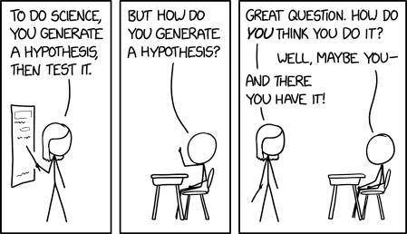

2 Inférence statistique
Dans la plupart des domaines scientifiques, les donnéese empiriques issues d’expériences contribuent à l’édification de la science. Afin de tirer des conclusions en faveur ou à l’encontre d’une théorie, les chercheurs se tournent (souvent à contrecoeur) vers la statistique. Cela a conduit à la prédominance de l’utilisation du cadre des tests statistiques et à la prépondérance des valeurs-\(p\) dans les articles scientifiques, souvent employées de manière abusive ou fautive dans les articles de journaux. La falsification d’une hypothèse nulle n’est pas suffisante pour fournir des résultats substantiels pour une théorie.
Comme les cours d’introduction aux statistiques présentent généralement des tests d’hypothèses sans accorder beaucoup d’attention aux principes de construction sous-jacents de ces procédures, les utilisateurs ont souvent une vision réductrice des statistiques. Plusieurs voient les statistiques comme un catalogue de procédures pré-établies. Pour faire une analogie culinaire, les utilisateurs se concentrent sur l’apprentissage en vase clos des recettes plutôt que d’essayer de comprendre les bases de la cuisine et de faire des liens. Ce chapitre se concentre sur la compréhension des concepts-clés liées aux tests.
Objectifs d’apprentissage
- Comprendre le rôle de l’incertitude dans la prise de décision.
- Comprendre l’importance du rapport signal/bruit en tant que preuve.
- Connaître les ingrédients de base des tests d’hypothèse et être capable de formuler et d’identifier correctement ces composants dans un article scientifique
- Interpréter correctement les valeurs-\(p\) et les intervalles de confiance pour un paramètre.
Avant d’entamer une collecte de données pour une expérience, il est nécessaire de formuler une question de recherche. En général, cette hypothèse spécifie les différences potentielles entre les caractéristiques de la population dues à une intervention (un traitement) que le chercheur souhaite quantifier. C’est à cette étape que les chercheurs décident de la taille de l’échantillon, du choix de la variable de réponse et de la méthode de mesure, qu’ils rédigent le plan de l’étude, etc.
Il est important de noter que la plupart des questions de recherche ne peuvent être résolues à l’aide d’outils simples. Les chercheurs qui souhaitent mener une recherche méthodologique innovante devraient contacter des experts et consulter des statisticien(ne)s avant de collecter leurs données afin d’obtenir des informations sur la meilleure façon de procéder pour ce qu’ils ont en tête, afin d’éviter le risque d’affirmations trompeuses basées sur une analyse ou une collecte de données incorrectes.
2.1 Variabilité échantillonale
Un chercheur s’intéressera à l’estimation de certaines caractéristiques de la population à partir d’une base de données. Nous pouvons caractériser l’ensemble de toutes les valeurs potentielles que leurs mesures peuvent prendre, ainsi que leur fréquence, au moyen d’une loi d’une variable aléatoire.
L’objectif de cette section est d’illustrer le fait que nous ne pouvons pas simplement utiliser les différences brutes entre les groupes pour effectuer des comparaisons significatives: en raison de la variabilité due à l’échantillonnage, les échantillons seront semblables même s’ils sont générés de la même manière, mais il y aura toujours des différences entre les statistiques récapitulatives calculées sur des échantillons différents. Ces différences ont tendance à s’atténuer (ou à augmenter) au fur et à mesure que l’on collecte davantage d’observations. Plus nous recueillons de données (et donc d’informations) sur notre cible, plus le portrait devient précis. C’est somme toute ce qui nous permet de tirer des conclusions mais, pour ce faire, nous devons d’abord déterminer ce qui est probable ou plausible et donc le fruit du hsard, de ce qui n’est pas ou peu susceptible de se produire.
Nous appelons statistiques les résumés numériques des données. Il est important de faire la distinction entre les procédures ou formules et leurs valeurs numériques. Un estimateur est une règle ou une formule utilisée pour calculer une estimation d’un paramètre ou d’une quantité d’intérêt sur la base de données observées (comme une recette de gâteau). Une fois que nous disposons de données observées, nous pouvons calculer la moyenne de l’échantillon, c’est-à-dire que nous disposons d’une estimation — d’une valeur réelle (le gâteau), qui est une réalisation unique et non aléatoire. En d’autres termes,
- un estimand est notre cible conceptuelle, comme la caractéristique de la population qui nous intéresse (la moyenne de la population).
- un estimateur est la procédure ou la formule qui nous indique comment transformer les données de l’échantillon en un résumé numérique qui est une approximation de notre cible.
- une estimation (ou un estimé) est un nombre, la valeur numérique obtenue lorsque nous appliquons la formule à un échantillon en praticulier.


Par exemple, si l’estimand est l’espérance de la population \(\mu,\) l’estimateur sera la moyenne arithmétique, soit la somme des éléments de l’échantillon aléatoire divisé par la taille de l’échantillon, ou, \(\overline{Y}=(Y_1 + \cdots + Y_n)/n.\) L’estimé sera une valeur numérique, disons 4.3.
Parce que les intrants de l’estimateur sont aléatoires, la sortie l’est également et varie d’un échantillon à l’autre. Autrement dit, même si on répète une recette, on n’obtient pas le même résultat à chaque coup, comme le montre si bien la Figure 2.3.

Pour illustrer ce point, Figure 2.4 montre cinq échantillons aléatoires simples de taille \(n=10\) tirés d’une population hypothétique de moyenne théorique \(\mu\) et d’écart-type \(\sigma,\) ainsi que leur moyenne d’échantillon \(\overline{y}.\) En raison de la variabilité échantillonnale, les moyennes des sous-groupes sont différentes même si elles proviennent de la même population. Vous pouvez considérer la variabilité d’échantillonnage comme du bruit: notre objectif est d’extraire le signal (typiquement les différences de moyennes) tout en tenant compte du bruit de fond.
L’oeil avisé pourra remarquer que les moyennes des cinq échantillons (segments horizontaux colorés) sont moins dispersées autour de la ligne horizontale noire représentant la moyenne de la population \(\mu\) que ne le sont les observations. Il s’agit là d’un principe fondamental de la statistique: l’information s’accumule au fur et à mesure que l’on obtient plus de données.
Les valeurs de la moyenne de l’échantillon ne donnent pas une image complète et l’étude des différences de moyenne (entre les groupes ou par rapport à une valeur de référence postulée) n’est pas suffisante pour tirer des conclusions. Dans la plupart des cas, rien ne garantit que la moyenne de l’échantillon sera égale à sa valeur réelle, car elle varie d’un échantillon à l’autre: la seule garantie que nous ayons est qu’elle sera en moyenne égale à la moyenne de la population dans des échantillons répétés. Selon le choix de la mesure et la variabilité de la population, il peut y avoir des différences considérables d’une observation à l’autre, ce qui signifie que la différence observée peut être un coup de chance.
Pour avoir une idée du degré de certitude d’une chose, nous devons considérer la variabilité d’une observation \(Y_i.\) Cette variance d’une observation tirée de la population est typiquement notée \(\sigma^2\) et sa racine carrée, l’écart-type, par \(\sigma.\)
L’écart-type d’une statistique est appelé erreur-type; il ne doit pas être confondu avec l’écart-type \(\sigma\) de la population dont sont tirées les observations de l’échantillon \(Y_1, \ldots, Y_n.\) L’écart-type et l’erreur-type sont exprimés dans les mêmes unités que les données et sont donc plus faciles à interpréter que la variance. L’erreur-type étant fonction de la taille de l’échantillon, il est d’usage de rapporter plutôt l’écart-type dans les rapports.
Exemple 2.1 (Proportion échantillonale et tirages uniformes) Pour illustrer le concept de variabilité échantillonnale, nous suivons l’exemple de [Matthew Crump] (https://www.crumplab.com/statistics/foundations-for-inference.html) et considérons des échantillons provenant d’une distribution uniforme sur \(\{1, 2, \ldots, 10\}\): chaque entier de cet intervalle a la même probabilité d’être tiré.
Même s’ils sont tirés de la même population, les 10 échantillons de Figure 2.5 sont très différents. La seule chose en jeu ici est la variabilité de l’échantillon: puisqu’il y a \(n=20\) d’observations au total, il devrait y avoir en moyenne 10% des observations dans chacun des 10 bacs, mais certains bacs sont vides et d’autres ont plus d’effectifs que prévu. Cette fluctuation est le fruit du hasard.
Comment pouvons-nous donc déterminer si ce que nous voyons est compatible avec le modèle qui, selon nous, a généré les données ? Il suffit de collecter davantage d’observations: la hauteur de la barre est la proportion de l’échantillon, une moyenne de valeurs 0/1, où la valeur ‘un’ indique que l’observation se trouve dans la case, et ‘zéro’ dans le cas contraire.
Considérons maintenant ce qui se passe lorsque nous augmentons la taille de l’échantillon: le panneau supérieur de Figure 2.6 montre des échantillons uniformes pour une taille d’échantillon croissante. Le diagramme à bande ressemble de plus en plus à la véritable distribution sous-jacente (fonction de masse constante, donc chaque case ayant la même fréquence) à mesure que la taille de l’échantillon augmente. La distribution des points de l’échantillon est presque indiscernable de la distribution théorique (ligne droite) lorsque \(n=10 000.\)1. Le panneau du bas, en revanche, ne provient pas d’une distribution uniforme. Plus l’échantillon grossit, plus l’approximation de la fonction de masse se rapproche de la vraie valeur. Nous n’aurions pas pu remarquer cette différence dans les deux premiers graphiques, car la variabilité de l’échantillonnage est trop importante; là, le manque de données dans certaines cases pourrait être un obstacle à l’obtention d’une distribution uniforme.
2.2 Tests d’hypothèse
Un test d’hypothèse statistique est une façon d’évaluer la preuve statistique provenant d’un échantillon afin de faire une décision quant à la population sous-jacente. Les étapes principales sont:
- définir les paramètres du modèle,
- formuler les hypothèses alternative et nulle,
- choisir et calculer la statistique de test,
- déterminer son comportement sous \(\mathscr{H}_0\) (loi nulle),
- calculer la valeur-p,
- conclure dans le contexte du problème (rejeter ou ne pas rejeter \(\mathscr{H}_0\)).
Mon approche privilégiée pour présenter les tests d’hypothèse est de faire un parallèle avec un procès pour meurtre où vous êtes nommé juré.
- Le juge vous demande de choisir entre deux hypothèses mutuellement exclusives, coupable ou non-coupable, sur la base des preuves présentées.
- Votre postulat de départ repose sur la présomption d’innocence: vous condamnerez uniquement le suspect si la preuve est accablante. Cela permet d’éviter les erreurs judiciaires. L’hypothèse nulle \(\mathscr{H}_0\) est donc non-coupable, et l’hypothèse alternative \(\mathscr{H}_a\) est coupable. En cas de doute raisonnable, vous émettrez un verdict de non-culpabilité.
- La choix de la statistique de test représente la preuve. Plus la preuve est accablante, plus grande est la chance d’un verdict de culpabilité — le procureur a donc tout intérêt à bien choisir les faits présentés en cour. Le choix de la statistique devrait donc idéalement maximiser la preuve pour appuyer le postulat de culpabilité le mieux possible (ce choix reflète la puissance du test).
- En qualité de juré, vous analysez la preuve à partir de la jurisprudence et de l’avis d’expert pour vous assurer que les faits ne relèvent pas du hasard. Pour le test d’hypothèse, ce rôle est tenu par la loi sous \(\mathscr{H}_0\): si la personne était innocente, est-ce que les preuves présentées tiendraient la route? des traces d’ADN auront davantage de poids que des ouï-dire (la pièce de théâtre Douze hommes en colère de Reginald Rose présente un bel exemple de procès où un des juré émet un doute raisonnable et convainc un à un les autres membres du jury de prononcer un verdict de non-culpabilité).
- Vous émettez un verdict, à savoir une décision binaire, où l’accusé est déclaré soit non-coupable, soit coupable. Si vous avez une valeur-p, disons \(P,\) pour votre statistique de test et que vous effectuez ce dernier à niveau \(\alpha,\) la règle de décision revient à rejeter \(\mathscr{H}_0\) si \(P < \alpha.\)
On s’attarde davantage sur ces définitions heuristiques et le vocabulaire employé pour parler de tests d’hypothèse.
2.3 Hypothèse
Dans les test statistique il y a toujours deux hypothèse: l’hypothèse nulle (\(\mathscr{H}_{0}\)) et l’hypothèse alternative (\(\mathscr{H}_a\)). Habituellement, l’hypothèse nulle est le « statu quo » et l’alternative est l’hypothèse que l’on cherche à démontrer. On se fait l’avocat du Diable en défendant l’hypothèse nulle et en analysant toutes les preuves sous l’angle: « est-ce que les données entrent en contradiction avec \(\mathscr{H}_0\)? ». Un test d’hypothèse statistique nous permet de décider si nos données nous fournissent assez de preuves pour rejeter \(\mathscr{H}_0\) en faveur de \(\mathscr{H}_a,\) selon un risque d’erreur spécifié.
Généralement, les tests d’hypothèses sont exprimés en fonction de paramètres (de valeurs inconnues) du modèle sous-jacent, par ex. \(\theta.\) Un test d’hypothèse bilatéral concernant un paramètre scalaire \(\theta\) s’exprimerait la forme suivante: \[\begin{align*} \mathscr{H}_0: \theta=\theta_0 \qquad \text{versus} \qquad \mathscr{H}_a:\theta \neq \theta_0. \end{align*}\] Ces hypothèses permettent de tester si \(\theta\) est égal à une valeur numérique précise \(\theta_0.\)
Par exemple, pour un test bilatéral concernant le paramètre d’un modèle de régression \(\beta_j\) associé à une variable explicative d’intérêt \(\mathrm{X}_j,\) les hypothèses sont \[\begin{align*} \mathscr{H}_0: \beta_j=\beta_j^0 \qquad \text{versus} \qquad \mathscr{H}_a:\beta_j \neq \beta_j^0, \end{align*}\] où \(\beta_j^0\) est une valeur précise qui est reliée à la question de recherche. Par exemple, si \(\beta_j^0=0\) la question de recherche sous-jacente est: est-ce que la covariable \(\mathrm{X}_j\) impacte la variable réponse d’intérêt \(Y\) une fois l’effet des autres variables pris en compte?
Il est possible d’imposer une direction dans les tests en considérant une hypothèse alternative de la forme \(\mathscr{H}_a: \theta > \theta_0\) ou \(\mathscr{H}_a: \theta < \theta_0.\)
2.4 Statistique de test
Une statistique de test \(T\) est une fonction des données qui résume l’information contenue dans les données pour \(\theta.\) La forme de la statistique de test est choisie de façon à ce que son comportement sous \(\mathscr{H}_0,\) c’est-à-dire l’ensemble des valeurs que prend \(T\) si \(\mathscr{H}_0\) est vraie et leur probabilité relative, soit connu. En effet, \(T\) est une variable aléatoire et sa valeur va changer selon l’échantillon. La loi nulle de la statistique de test nous permet de déterminer quelles valeurs de \(T\) sont plausibles si \(\mathscr{H}_0\) est vraie. Plusieurs statistiques que l’on couvrira dans ce cours sont des statistiques de Wald, de la forme \[\begin{align*} T = \frac{\widehat{\theta} - \theta_0}{\mathrm{se}(\widehat{\theta})} \end{align*}\] où \(\widehat{\theta}\) est l’estimateur du paramètre \(\theta,\) \(\theta_0\) la valeur numérique postulée (par ex., zéro) et \(\mathrm{se}(\widehat{\theta})\) est l’estimateur de l’écart-type de \(\widehat{\theta}.\)
Par exemple, pour une hypothèse sur la moyenne d’une population de la forme \[\begin{align*} \mathscr{H}_0: \mu=0, \qquad \mathscr{H}_a:\mu \neq 0, \end{align*}\] la statistique de test de Wald est \[\begin{align*} T &= \frac{\overline{X}-0}{S_n/\sqrt{n}} \end{align*}\] où \(\overline{X}\) est la moyenne de l’échantillon \(X_1, \ldots, X_n,\) \[\begin{align*} \overline{X} &= \frac{1}{n} \sum_{i=1}^n X_i = \frac{X_1+ \cdots + X_n}{n} \end{align*}\] et l’erreur-type de la moyenne \(\overline{X}\) est \(S_n/\sqrt{n}\); l’écart-type \(S_n\) est un estimateur de \(\sigma,\) où \[\begin{align*} S^2_n &= \frac{1}{n-1} \sum_{i=1}^n (X_i-\overline{X})^2. \end{align*}\]
2.5 Loi nulle et valeur-p
La valeur-p nous permet de déterminer si la valeur observée de la statistique de test \(T\) est plausible sous \(\mathscr{H}_0.\) Plus précisément, la valeur-p est la probabilité, si \(\mathscr{H}_0\) est vraie, que la statistique de test soit égale or plus extrême à ce qu’on observe. Supposons qu’on a un échantillon \(X_1, \ldots, X_n\) et qu’on observe une valeur de la statistique de test de \(T=t.\) Pour un test d’hypothèse bilatéral \(\mathscr{H}_0:\theta=\theta_0\) vs. \(\mathscr{H}_a:\theta \neq \theta_0,\) la valeur-p est \(\Pr{\!}_0(|T| \geq |t|).\) Si la distribution de \(T\) est symétrique autour de zéro, la valeur-p vaut \[\begin{align*} p = 2 \times \Pr{\!}_0(T \geq |t|). \end{align*}\]
La Figure 2.7 montre la loi des valeurs-\(p\) sous deux scénarios: à gauche, une loi nulle et à droite, une loi alternative. La probabilité de rejetter \(\mathscr{H}_0\) est obtenue en calculant l’aire sous la courbe sous la courbe de densité et \(\alpha=0.1.\) Sous l’hypothèse nulle, le modèle est calibré et la loi des valeurs-\(p\) est uniforme (un rectangle de hauteur 1), ce qui veut dire que toutes les valeurs sont également plausibles. Sous l’alternative, l’obtention de petites valeurs\(-\)p est plus plausible.

Il existe généralement trois façons d’obtenir des lois nulles pour évaluer le degré de preuve contre l’hypothèse nulle
- les calculs exacts (combinatoires)
- la théorie des grands échantillons (appelée « régime asymptotique » dans le jargon statistique)
- les méthodes de simulation Monte Carlo.
Bien que souhaitable, la première méthode n’est applicable que dans des cas simples (comme le calcul de la probabilité d’obtenir deux six en lançant deux dés identiques). La deuxième méthode est la plus couramment utilisée en raison de sa généralité et de sa facilité d’utilisation (en particulier dans les temps anciens où la puissance de calcul était rare), mais elle ne donne pas de bons résultats avec des échantillons de petite taille (où la noti de « trop petit » dépend du contexte et du test). La dernière approche peut être utilisée pour approcher la distribution nulle dans de nombreux scénarios, mais elle ajoute une couche d’aléatoire et les coûts de calcul supplémentaires n’en valent parfois pas la peine.
Prenons l’exemple d’un test d’hypothèse bilatéral pour la moyenne au population \(\mathscr{H}_0:\mu=0\) contre \(\mathscr{H}_a:\mu \neq 0.\) Si l’échantillon provient d’une (population de) loi normale \(\mathsf{normale}(\mu, \sigma^2),\) on peut démontrer que, si \(\mathscr{H}_0\) est vraie et donc \(\mu=0\)), la statistique de test \[\begin{align*} T = \frac{\overline{X}}{S/\sqrt{n}} \end{align*}\] suit une loi de Student-\(t\) avec \(n-1\) degrés de liberté, dénotée \(\mathsf{Student}_{n-1}.\) À partir de cette loi nulle, on peut calculer la valeur-p (ou bien à partir d’une table ou d’un logiciel statistique). Puisque la distribution Student-\(t\) est symétrique autour de \(0,\) on peut calculer la valeur-p comme \(P = 2\times\Pr(T > |t|),\) où \(T \sim \mathsf{Student}_{n-1}.\)
2.6 Intervalle de confiance
Un intervalle de confiance est une manière alternative de rapporter les conclusions d’un test, en ce sens qu’on fournit une estimation ponctuelle de \(\hat{\theta}\) avec une marge d’erreur. L’intervalle de confiance donne donc une indication de la variabilité de la procédure d’estimation. Un intervalle de confiance de Wald à \((1-\alpha)\) pour un paramètre \(\theta\) est de la forme \[\begin{align*} [\widehat{\theta} + \mathfrak{q}_{\alpha/2}\mathrm{se}(\widehat{\theta}), \widehat{\theta} +\mathfrak{q}_{1-\alpha/2}\times \mathrm{se}(\widehat{\theta})] \end{align*}\] où \(\mathfrak{q}_{\alpha}\) dénote le quantile d’ordre \(\alpha \in (0,1)\) de la loi nulle de la statistique de Wald, \[\begin{align*} T =\frac{\widehat{\theta}-\theta}{\mathrm{se}(\widehat{\theta})}, \end{align*}\] et où \(\theta\) représente la valeur du paramètre \(\theta\) (supposé fixe, mais inconnu) de la population.
Par exemple, pour un échantillon aléatoire \(X_1, \ldots, X_n\) provenant d’une loi \(\mathsf{normale}(\mu, \sigma),\) l’intervalle de confiance à \((1-\alpha)\) pour la moyenne (dans la population) \(\mu\) est \[\begin{align*} \overline{X} \pm t_{n-1, \alpha/2} \frac{S}{\sqrt{n}} \end{align*}\] où \(t_{n-1, \alpha/2}\) est le quantile d’ordre \(1-\alpha/2\) de la loi Student-\(t\) avec \(n-1\) degrés de libertés.
Les bornes de l’intervalle de confiance sont aléatoires puisque \(\widehat{\theta}\) et \(\mathrm{se}(\widehat{\theta})\) sont des variable aléatoires: leurs valeurs observées changent d’un échantillon à un autre. Avant qu’on calcule l’intervalle de confiance, il y a une probabilité de \(1-\alpha\) que \(\theta\) soit contenu dans l’intervalle aléatoire symmétrique \((\widehat{\theta} - \mathfrak{q}_{\alpha/2} \; \mathrm{se}(\widehat{\theta}), \widehat{\theta} + \mathfrak{q}_{\alpha/2} \; \mathrm{se}(\widehat{\theta})),\) où \(\widehat{\theta}\) dénote l’estimateur de \(\theta.\) Une fois qu’on obtient un échantillon et qu’on calcule les bornes de l’intervalle de confiance, il n’y a plus de notion de probabilité: la vraie valeur du paramètre \(\theta\) (inconnue) est soit contenue dans l’intervalle de confiance, soit pas. La seule interprétation de l’intervalle de confiance qui soit valable alors est la suivante: si on répète l’expérience plusieurs fois et qu’à chaque fois on calcule un intervalle de confiance à \(1-\alpha,\) alors une proportion de \((1-\alpha)\) de ces intervalles devraient contenir la vraie valeur de \(\theta\) (de la même manière, si vous lancez une pièce de monnaie équilibrée, vous devriez obtenir grosso modo une fréquence de 50% de pile et 50% de face, mais chaque lancer donnera un ou l’autre de ces choix). Notre « confiance » est dans la procédure et non pas dans les valeurs numériques obtenues pour un échantillon donné.

Si on s’intéresse seulement à la décision rejeter/ne pas rejeter \(\mathscr{H}_0,\) l’intervalle de confiance est équivalent à la valeur-p en ce sens qu’il mène à la même décision. L’intervalle de confiance donne en revanche l’ensemble des valeurs pour lesquelles la statistique de test ne fournit pas assez de preuves pour rejeter \(\mathscr{H}_0\): pour un test à niveau \(\alpha,\) on ne rejetterait aucune des valeurs contenues dans l’intervalle de confiance de niveau \(1-\alpha.\) Si la valeur-p est inférieure à \(\alpha,\) la valeur postulée pour \(\theta\) est donc hors de l’intervalle de confiance calculé. À l’inverse, la valeur-p ne donne la probabilité d’obtenir un résultat aussi extrême sous l’hypothèse nulle que pour une seule valeur numérique, mais permet de quantifier précisément à quel point le résultat est extrême.
2.7 Conclusion
La valeur-p nous permet de faire une décision quant aux hypothèses du test. Si \(\mathscr{H}_0\) est vraie, la valeur-p suit une loi uniforme. Si la valeur-p est petite, ça veut dire que le fait d’observer une statistique de test égal ou encore plus extrême que \(T=t\) est peu probable, et donc nous aurons tendance de croire que \(\mathscr{H}_0\) n’est pas vraie. Il y a pourtant toujours un risque sous-jacent de commettre un erreur quand on prend une décision. En statistique, il y a deux types d’erreurs:
- erreur de type I: on rejette \(\mathscr{H}_0\) alors que \(\mathscr{H}_0\) est vraie
- erreur de type II: on ne rejette pas \(\mathscr{H}_0\) alors que \(\mathscr{H}_0\) est fausse
Ces deux erreurs ne sont pas égales: on cherche souvent à contrôler l’erreur de type I (une erreur judiciaire, condamner un innocent). Pour se prémunir face à ce risque, on fixe préalablement un niveau de tolérance. Plus notre seuil de tolérance \(\alpha\) est grand, plus on rejette souvent l’hypothèse nulle même si cette dernière est vraie. La valeur de \(\alpha \in (0, 1)\) est la probabilité qu’on rejette \(\mathscr{H}_0\) quand \(\mathscr{H}_0\) est en fait vraie. \[\begin{align*} \alpha = \Pr{\!}_0\left(\text{ rejeter } \mathscr{H}_0\right). \end{align*}\] Comme chercheur, on choisit ce niveau \(\alpha\); habituellement \(1\)%, \(5\)% ou \(10\)%. La probabilité de commettre une erreur de type I est \(\alpha\) seulement si le modèle nul postulé pour \(\mathscr{H}_0\) est correctement spécifié (sic) et correspond au modèle générateur des données.
Le choix du statu quo (typiquement \(\mathscr{H}_0\)) s’explique plus facilement avec un exemple médical. Si vous voulez prouver qu’un nouveau traitement est meilleur que l’actuel (ou l’absence de traitement), vous devez démontrer hors de tout doute raisonnable que ce dernier ne cause pas de torts aux patients et offre une nette amélioration (pensez à Didier Raoult et ses allégations non-étayées voulant que l’hydrochloroquine, un antipaludique, soit efficace face au virus de la Covid19).
| Décision \ vrai modèle | \(\mathscr{H}_0\) | \(\mathscr{H}_a\) |
|---|---|---|
| ne pas rejeter \(\mathscr{H}_0\) | \(\checkmark\) | erreur de type II |
| rejeter \(\mathscr{H}_0\) | erreur de type I | \(\checkmark\) |
Pour prendre une décision, on doit comparer la valeur-p \(P\) avec le niveau du test \(\alpha\):
- si \(P < \alpha\) on rejette \(\mathscr{H}_0,\)
- si \(P \geq \alpha\) on ne rejette pas \(\mathscr{H}_0.\)
Attention à ne pas confondre niveau du test (probabilité fixée au préalable par l’expérimentateur) et la valeur-p (qui dépend de l’échantillon). Si vous faites un test à un niveau 5% la probabilité de faire une erreur de type I est de 5% par définition, quelque soit la valeur de la valeur-p. La valeur-p s’interprète comme la probabilité d’obtenir une valeur de la statistique de test égale ou même plus grande que celle qu’on a observée dans l’échantillon, si \(\mathscr{H}_0\) est vraie.
Mise en garde
L’American Statistical Association (ASA) a publié une liste de principes détaillant les principales erreurs d’interprétation des valeurs-\(p,\) notamment
- Les valeurs-\(p\) ne mesurent pas la probabilité que l’hypothèse étudiée est vrai
- Les décisions d’affaires et scientiques ne devraient pas seulement être basées sur le fait qu’une valeur-\(p\) est inférieure à un seuil spécifié.
- Les analyses statistiques et les valeurs-\(p\) associées ne devraient pas être rapportées de manière sélective.
- Les valeurs-\(p,\) ou la significativité statistiques, ne mesurent pas la taille de l’effet ou l’importance d’un résultat.
2.8 Puissance statistique
Le but du test d’hypothèse est de prouver (hors de tout doute raisonnable) qu’une différence ou un effet est significatif: par exemple, si une nouvelle configuration d’un site web (hypothèse alternative) permet d’augmenter les ventes par rapport au statu quo. Notre capacité à détecter cette amélioration dépend de la puissance du test: plus cette dernière est élevée, plus grande est notre capacité à rejeter \(\mathscr{H}_0\) quand ce dernier est faux.
Quand on ne rejette pas \(\mathscr{H}_0\) et que \(\mathscr{H}_a\) est en fait vraie, on commet une erreur de type II: cette dernière survient avec probabilité \(1-\gamma.\) La puissance statistique d’un test est la probabilité que le test rejette \(\mathscr{H}_0\) alors que \(\mathscr{H}_0\) est fausse, soit \[\begin{align*} \gamma = \Pr{\!}_a(\text{rejeter } \mathscr{H}_0) \end{align*}\] Selon le choix de l’alternative, il est plus ou moins facile de rejeter l’hypothèse nulle en faveur de l’alternative.
On veut qu’un test ait une puissance élevée, c’est-à-dire, le plus près de 1 possible. Minimalement, la puissance du test devrait être \(\alpha\) si on rejette l’hypothèse nulle une fraction \(\alpha\) du temps quand cette dernière est vraie. La puissance dépend de plusieurs critères, à savoir:
- la taille de l’effet: plus la différence est grande entre la valeur postulée \(\theta_0\) du paramètre sous \(\mathscr{H}_0\) et le comportement observé, plus il est facile de le détecter (panneau du milieu de Figure 2.9);
- la variabilité: moins les observations sont variables, plus il est facile de déterminer que la différence observée est significative (les grandes différences sont alors moins plausibles, comme l’illustre le panneau de droite de Figure 2.9);
- la taille de l’échantillon: plus on a d’observations, plus notre capacité à détecter une différence significative augmente parce que l’erreur-type décroît avec la taille de l’échantillon à un rythme (ordinairement) de \(n^{-1/2}.\) La loi nulle devient aussi plus concentrée quand la taille de l’échantillon augmente.
- le choix de la statistique de test: par exemple, les statistiques basées sur les rangs n’utilisent pas les valeurs numériques qu’à travers le rang relatif. Ces tests sont donc moins puissants parce qu’ils n’utilisent pas toute l’information dans l’échantillon; en contrepartie, ils sont souvent plus robustes en présence de valeurs aberrantes et si le modèle est mal spécifié. Les statistiques de test que nous choisirons sont souvent standards et parmi les plus puissantes qui soient, aussi on ne traitera pas de ce point davantage dans le cadre du cours.
Pour calculer la puissance d’un test, il faut choisir une alternative spécifique. Pour des exemples simples de statistiques, on peut obtenir une formule explicite pour la puissance. Généralement, on détermine la puissance à l’aide de méthodes de Monte Carlo en simulant des observations d’une alternative donnée, en calculant la statistique de test sur le nouvel échantillon simulé et en calculant la valeur-p associée à notre hypothèse nulle de façon répétée. On calcule par la suite la proportion de tests qui mènent au rejet de l’hypothèse nulle à niveau \(\alpha,\) ce qui correspond au pourcentage de valeurs-\(p\) inférieures à \(\alpha.\)
2.9 Exemples
Exemple 2.2 (Inégalité de genre et tests de permutation) Nous examinons les données de Rosen et Jerdee (1974), qui étudie les stéréotypes de genre et leur impact sur la promotion et les opportunités pour les femmes candidates. L’expérience s’est déroulée en 1972 et les unités expérimentales, composées de 95 superviseurs bancaires masculins, ont reçu divers mémorandums et ont été invitées à fournir des évaluations de candidatures pour un poste de cadre. Ils devaient prendre des décisions sur la base des informations fournies.
Nous nous intéressons à l’expérience 1 relative à la promotion des employés: les responsables devaient décider de promouvoir ou non un employé au poste de directeur de succursale sur la base de recommandations et d’évaluations du potentiel de relations avec les clients et les employés. L’intervention des auteurs s’est concentrée sur la description de la nature (complexité) du travail du gestionnaire (simple ou complexe) et sur le sexe du candidat (homme ou femme): tous les dossiers étaient par ailleurs similaires.
Pour des raisons de simplicité, nous ne considérons que le facteur sexe et nous agrégeons sur le poste pour les \(n=93\) réponses. La table Tableau 2.1 montre le décompte des recommendations pour chaque possibilité.
| male | female | |
|---|---|---|
| promouvoir | 32 | 19 |
| ne pas promouvoir | 12 | 30 |
L’hypothèse nulle qui nous intéresse ici est que le sexe n’a pas d’impact, de sorte que la probabilité de promotion est la même pour les hommes et les femmes. Soit \(p_{\text{h}}\) et \(p_{\text{f}}\) ces probabilités respectives; nous pouvons donc écrire mathématiquement l’hypothèse nulle comme \(\mathscr{H}_0: p_{\text{h}} = p_{\text{f}}\) contre l’alternative \(\mathscr{H}_a: p_{\text{h}} \neq p_{\text{f}}\).
La statistique de test généralement employée pour les tableaux de contingence est un test du chi carré2, qui compare les proportions globales de promotion de chaque sous-groupe. La proportion de l’échantillon pour les hommes est de 32/42 = ~76%, contre 19/49 =~49% pour les femmes. Bien que cette différence de 16 % semble importante, elle pourrait être trompeuse: l’erreur type pour les proportions de l’échantillon est d’environ 3.2 % pour les hommes et 3.4 % pour les femmes.
S’il n’y avait pas de discrimination fondée sur le sexe, nous nous attendrions à ce que la proportion de personnes promues soit la même dans l’ensemble; elle est de 51/93 ou 0.55 pour l’échantillon regroupé. Nous pourrions nous contenter de tester la différence moyenne, mais nous nous appuyons plutôt sur le test de contingence \(X^2_p\) de Pearson (également appelé test du khi-carré), qui compare les chiffres attendus (sur la base de taux de promotion égaux) aux chiffres observés, convenablement normalisés. convenablement normalisés. Si l’écart est important entre les chiffres attendus et les chiffres observés, cela met en doute la véracité de l’hypothèse nulle.
Si les effectifs de chaque cellule sont importants, la distribution nulle du test du chi-deux est bien approximée par une distribution de \(\chi^2\). La sortie du test comprend la valeur de la statistique, \(10.79,\) les degrés de liberté de l’approximation \(\chi^2\) et la valeur p, qui donne la probabilité qu’un tirage aléatoire d’une distribution \(\chi^2_1\) soit plus grand que la statistique de test observée en supposant que l’hypothèse nulle est vraie. La valeur p est très petite, \(0.001\), ce qui signifie qu’il est très peu probable qu’un tel résultat soit le fruit du hasard s’il n’y a pas eu de discrimination fondée sur le sexe.
Une autre solution pour obtenir un point de référence permettant d’évaluer le caractère exagéré du rapport de cotes observé consiste à utiliser des simulations: les tests de permutation sont efficaces [illustrés par Jared Wilber] (https://www.jwilber.me/permutationtest/). Considérons une base de données contenant les données brutes avec 93 lignes, une pour chaque gestionnaie, avec pour chacune un indicateur d’action et le sexe de l’employé hypothétique présenté dans la tâche.
| action | sexe |
|---|---|
| promouvoir | homme |
| ne pas promouvoir | femme |
| promouvoir | homme |
| ne pas promouvoir | femme |
| ne pas promouvoir | homme |
Sous l’hypothèse nulle, le sexe n’a aucune incidence sur l’action du gestionnaire. Cela signifie que nous pourrions dresser un portrait du monde sans discrimination en mélangeant les étiquettes de sexe de manière répétée. Ainsi, nous pourrions obtenir une référence en répétant les étapes suivantes plusieurs fois :
- permuter les étiquettes pour le
sexe, - recréer un tableau de contingence en agrégeant les effectifs,
- calculer une statistique de test pour le tableau simulé.
Comme statistique de test, nous utilisons le rapport des cotes: la probabilité d’un événement est le rapport entre le nombre de succès et le nombre d’échecs. Dans notre exemple, il s’agirait du nombre de dossiers promus par rapport au nombre de dossiers retenus. La probabilité de promotion d’un homme est de \(32/12,\) alors que celle d’une femme est de \(19/30.\) Le rapport des cotes pour un homme par rapport à une femme est donc \(\mathsf{RC}=(32/12) / (19/30)= 4.21.\) Sous l’hypothèse nulle, \(\mathscr{H}_0: \mathsf{OR}= 1\) (même probabilité d’être promu) (pourquoi ?)

L’histogramme de la Figure 2.10 montre la distribution du rapport de cotes sur la base de 10 000 permutations. Il est rassurant de constater que nous obtenons à peu près la même valeur p approximative, ici 0.002.3.
L’article concluait (à la lumière de ce qui précède et d’autres expériences)
Les résultats ont confirmé l’hypothèse selon laquelle les administrateurs masculins ont tendance à discriminer les employées dans les décisions concernant la promotion, le développement et la supervision du personnel.
Récapitulatif
- Paramètres du modèle: probabilité de promotion pour les hommes et les femmes, respectivement \(p_{\text{h}}\) et \(p_{\text{f}}\).
- Hypothèses: pas de discrimination fondée sur le sexe, ce qui signifie une probabilité de promotion égale (hypothèse nulle \(\mathscr{H}_0: p_{\text{h}}=p_{\text{f}},\) contre hypothèse alternative \(\mathscr{H}_a: p_{\text{h}}\neq p_{\text{f}}\)).
- Statistique de test: (1) test du khi-deux pour les tableaux de contingence et (2) rapport de cotes.
- Valeur-\(p\): (1) \(.0010\) et (2) \(.0024\) pour le test de permutation.
- Conclusion: rejeter l’hypothèse nulle, car il existe des preuves d’une discrimination fondée sur le sexe, avec une probabilité de promotion différente pour les hommes et les femmes.
Conformément aux directives de l’APA, la statistique \(\chi^2\) serait présentée sous la forme \(\chi^2(1, n = 93) = 10.79\), \(p = .001\) en même temps que les effectifs et les proportions de l’échantillon.
Exemple 2.3 (L’élément de surprise d’une prise de contact inattendue) Liu et al. (2023) étudie les interactions sociales et l’impact de la surprise sur les personnes qui contactent de vieilles connaissances de manière inattendue. L’expérience 1 se concentre sur des questionnaires où la condition expérimentale est l’appréciation perçue du fait d’envoyer une communication à quelqu’un avec qui on n’a pas correspondu depuis longtemps (par opposition au fait de se faire contacter). L’étude a utilisé un questionnaire envoyé à 200 adultes américains recrutés sur la plateforme Prolific Academic. L’indice de réponse consiste en la moyenne de quatre questions mesurées sur une échelle de Likert allant de 1 à 7, les valeurs les plus élevées indiquant une plus grande appréciation de la prise de contact.
Nous pouvons commencer par examiner les statistiques sommaires des variables sociodémographiques (sexe et âge) afin d’évaluer si l’échantillon est représentatif de la population générale dans son ensemble. La proportion d’« autres » (comprenant les personnes non binaires) est beaucoup plus élevée que celle du recensement général, et la population est plutôt jeune selon Tableau 2.3.
| genre | min | max | moyenne | n |
|---|---|---|---|---|
| homme | 18 | 78 | 32.0 | 105 |
| femme | 19 | 68 | 36.5 | 92 |
| autre | 24 | 30 | 27.7 | 3 |
| rôle | moyenne | écart-type | n |
|---|---|---|---|
| initiateur | 5.50 | 1.28 | 103 |
| destinataire | 5.87 | 1.27 | 97 |
Comme il n’y a que deux groupes sans chevauchements (c’est à dire que les personnes ont un seul rôle), soit initiateur ou destinataire, le test logique à utiliser est un test-\(t\) pour deux échantillons indépendants, ou une variante de celui-ci. En utilisant la statistique du \(t\)-test de Welch, la moyenne et l’écart-type de chaque groupe sont estimés à l’aide des données fournies.
Le logiciel renvoie comme valeur du test , ce qui conduit au rejet de l’hypothèse nulle d’absence de différence d’appréciation en fonction du rôle de l’individu (initiateur ou destinataire). La différence moyenne estimée est \(\Delta M = -0.37\), 95% CI \([-0.73, -0.01]\); puisque \(0\) n’est pas inclus dans l’intervalle de confiance, nous rejetons également l’hypothèse nulle au niveau 5%. L’estimation suggère que les initiateurs sous-estiment l’importance de contacter de manière inattendue.4.
Récapitulatif
- Paramètres du modèle: score d’appréciation moyen \(\mu_{\mathrm{i}}\) et \(\mu_{\mathrm{d}}\) des initiateurs et des destinataires, respectivement.
- Hypothèse: le score d’appréciation attendu est le même pour les initiateurs et les destinataires, \(\mathscr{H}_0: \mu_{\mathrm{i}}=\mu_{\mathrm{d}}\) contre l’alternative \(\mathscr{H}_0: \mu_{\mathrm{i}} \neq \mu_{\mathrm{r}}\) qu’ils sont différents.
- Statistique de test: test-\(t\) de Welch pour deux échantillons indépendants
- Valeur-\(p\): 0.041
- Conclusion: rejet de l’hypothèse nulle, le score moyen d’appréciation diffère selon le rôle tenu.
Exemple 2.4 (Les communications virtuelles réduisent le nombre d’idées créatives) Une étude de Nature a réalisé une expérience pour voir comment les communications virtuelles impactent le travail d’équipe en comparant le nombre d’idées créatives générées par des binômes au cours d’une tempête d’idée, ainsi que leur qualité telle que mesurée par des arbitres externes. L’échantillon était composé de 301 paires de participants qui ont interagi par vidéoconférence ou en face à face.
Les auteurs ont comparé le nombre d’idées créatives, un sous-ensemble d’idées générées avec un score de créativité supérieur à la moyenne. Le nombre moyen d’idées créatives pour le face à face est \(7.92\) idées (écart-type \(3.40\)), comparativement à \(6.73\) idées (écart-type¸ \(3.27\)) pour la vidéoconférence.
Brucks et Levav (2022) a utilisé un modèle de régression binomiale négative: dans leur modèle, le nombre moyen d’idées créatives générées est \[\begin{align*} \mathsf{E}(\texttt{ncreative}) = \exp(\beta_0 + \beta_1 \texttt{video}) \end{align*}\] où \(\texttt{video}=0\) si la paire se trouve dans la même pièce et \(\texttt{video}=1\) si elle interagit plutôt par vidéoconférence.
Le nombre moyen d’idées pour la vidéoconférence est donc \(\exp(\beta_1)\) multiplié par celui du face à face: l’estimation du facteur multiplicatif est \(\exp(\beta_1)\) est \(0.85\) 95% CI \([0.77, 0.94]\).
L’absence de différence entre les conditions expérimentales se traduit par l’hypothèse nulle \(\mathscr{H}_0: \beta_1=0\) vs \(\mathscr{H}_0: \beta_1 \neq 0\) ou, de manière équivalente, \(\mathscr{H}_0: \exp(\beta_1)=1\). Le test du rapport de vraisemblance comparant le modèle de régression avec et sans \(\texttt{video}\) la statistique est \(R=9.89\) (valeur-\(p\) basée sur \(\chi^2_1\) de \(.002\)). Nous concluons que le nombre moyen d’idées est différent, les statistiques sommaires suggérant que les paires virtuelles génèrent moins d’idées.
Si nous avions eu recours à un test-\(t\) pour deux échantillons indépendants, nous aurions trouvé une différence moyenne dans le nombre d’idées créatives de \(\Delta M = 1.19\), 95% CI \([0.43, 1.95]\), \(t(299) = 3.09\), \(p = .002\).
Les deux tests reposent sur des hypothèses légèrement différentes, mais aboutissent à des conclusions similaires: il a de forts indices que le nombre d’idées créatives est plus faible lorsque les personnes interagissent par vidéoconférence.
Exemple 2.5 (Prix de billets de trains à grande vitesse espagnols) La compagnie nationale de chemin de fer Renfe gère les trains régionaux et les trains à haute vitesse dans toute l’Espagne. Les prix des billets vendus par Renfe sont aggrégés par une compagnie. On s’intéresse ici à une seule ligne, Madrid–Barcelone. Notre question scientifique est la suivante: est-ce que le prix des billets pour un aller (une direction) est plus chère pour un retour? Pour ce faire, on considère un échantillon de 10000 billets entre les deux plus grandes villes espagnoles. On s’intéresse au billets de TGV vendus (AVE) au tarif Promotionnel. Notre statistique de test sera simplement la différence de moyenne entre les deux échantillons: la différence entre le prix en euros d’un train Madrid–Barcelone (\(\mu_1\)) et le prix d’un billet Barcelone–Madrid (\(\mu_2\)) est \(\mu_1-\mu_2\) et notre hypothèse nulle est qu’il n’y a aucune différence de prix, soit \(\mathscr{H}_0: \mu_1-\mu_2=0.\)
On utilise de nouveau le test de Welch pour deux échantillons en filtrant les données pour ne conserver que les billets au tarif Promo: la moyenne des billets Barcelone-Madrid est 82.11 euros, ceux pour Madrid-Barcelone 82.56 euros et la valeur de la statistique de Welch est -1.33. Si on utilise l’approximation normale, on obtient une valeur-\(p\) de 0.18.
Plutôt que d’utiliser la loi asymptotique (qui est valide pour de grands échantillons à cause du théorème central limite), on peut considérer une approximation sous une hypothèse moins restrictive en supposant que les données sont échangeables. Sous l’hypothèse nulle, il n’y aucune différence entre les deux destinations et les étiquettes pour la destination (une variable catégorielle binaire) sont arbitraires. On pourrait considérer les mêmes données, mais avec une permutation des variables explicatives: c’est ce qu’on appelle un test de permutation. On va recréer deux groupes de taille identique à notre échantillon original, mais en changeant les observations. On recalcule la statistique de test sur ces nouvelle données (si on a une poignée d’observations, il est possible de lister toutes les permutations possibles; typiquement, il suffit de considérer un grand nombre de telles permutations, disons 9999). Pour chaque nouveau jeu de données, on calculera la statistique de test et on calculera le rang de notre statistique par rapport à cette référence. Si la valeur de notre statistique observée sur l’échantillon original est extrême en comparaison, c’est autant de preuves contre l’hypothèse nulle.
La valeur-p du test de permutation, \(0.186,\) est la proportion de statistiques plus extrêmes que celle observée. Cette valeur-p est quasi-identique à celle de l’approximation de Satterthwaite, à savoir \(0.182\) (la loi Student-\(t\) est numériquement équivalente à une loi standard normale avec autant de degrés de liberté), tel que représenté dans la Figure 2.11. Malgré que notre échantillon soit très grand, avec \(n=8059\) observations, la différence n’est pas jugée significative. Avec un échantillon de deux millions de billets, on pourrait estimer précisément la moyenne (au centime près): la différence de prix entre les deux destinations et cette dernière deviendrait statistiquement significative. Elle n’est pas en revanche pas pertinente en partique, car une différence de \(0.28\) euros sur un prix moyen de \(82.56\) euros est quantité négligeable.
La formule montre que l’erreur standard diminue d’un facteur 10 chaque fois que la taille de l’échantillon augmente d’un facteur 100.↩︎
Si vous avez suivi des cours de modélisation avancés, il s’agit d’un test de score obtenu en ajustant une régression de Poisson avec
sexeetactioncomme covariables; l’hypothèse nulle correspondant à l’absence de terme d’interaction entre les deux.↩︎La valeur p obtenue pour le test de permutation changerait d’une exécution à l’autre puisque les intrants sont aléatoires. Cependant, la précision de la statistique est suffisante pour la prise de décision↩︎
En supposant que la variance de chaque sous-groupe soit égale, nous aurions pu utiliser un \(t\)-test à deux échantillons à la place. La différence dans la conclusion est insignifiante, avec une valeur p presque égale↩︎